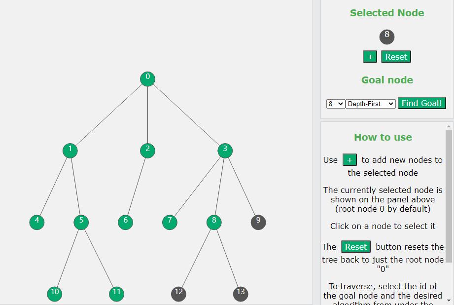

Interactive Search Tree Traversal
 Source(Github)Test Demo
This web app was inspired by another project I found on Github. The creator had designed a web app which would allow the user to interactively create mazes around a starting and end point. The user could then select a path finding algorithm and watch how the algorithm would traverse the maze. I though this was a great educational tool and I decided to see if this concept would apply to any other types of algorithms. Thus this project was started.